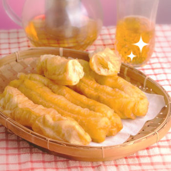

Fandom / Interest List
Fave / Bias / Oshi List
Anime Recommendation
about my name

things i like to do
- Cooking — I sure like it when I'm not hungry because I have tasty, nutritiously balanced food to eat
- Cleaning — When I lose control of my life, at least I can control how clean I want my room to be
- Mess around with Ableton — haha midi instruments and reverb go wHEEEEEEE
- Open VSCode and update this website — I can't afford a website builder lol
- Pour out my thoughts in my Hobonichi planner / ほぼ日手帳
- Read manga and watch anime because I'm a big weeb
- Play rhythm games or mobile games or touhou
Anyway, I just type these down in no order (whichever / whoever pops up in my mind) and I'll probably update my lists twice a year lmao
Fandom / Interest List
- Touhou
- Pokémon
- Maimai
- Arcaea
- Arknights
- Destiny Child
- Cytus
Fave / Bias / Oshi List
- Yuyuko Saigyouji (Touhou)
- Kasen Ibaraki (Touhou)
- Mutsunokami Yoshiyuki (Touken Ranbu)
- Ozymandias (Fate)
- Steven Stone / Daigo Tsuwabuki (Pokémon)
- Mostima (Arknights)
- Bathory (Destiny Child)
- Cecil Aijima (Uta no Prince-sama)
Anime Recommendation
Click here to get redirected to My Anime List, sorted by score + alphabetically.
The titles I've marked with a score of 9 and 8 are anime shows / series I think worth watching and I would recommend to my friends.
Score of 7 means it's enjoyable for me, but I won't recommend it to my friends unless they like the genre / themes. Score of 6 means I won't recommend it to my friends.
Please note that a lower score rating doesn't necessarily mean the anime's bad, and vice versa -- a high score doesn't mean it's a masterpiece.
Example: I really liked Uta no☆Prince-sama♪ Maji Love Kingdom Movie and went to see it at a theater and OH BOY I HAD A BLAST, A REAL SUPER FUN TIME but not everyone likes this genre / this series.
Hence the score of 7 -- I won't recommend it to people who do not follow the series, but I would recommend it to a friend who likes the genre.